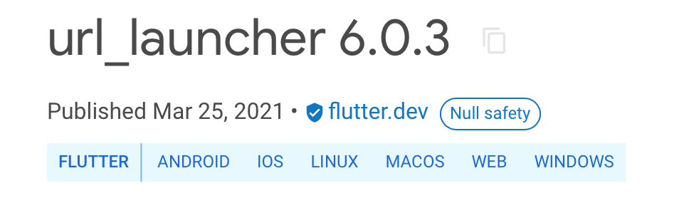

适配Web客户端#
本文主要探讨把已移动端适配的课堂APP迁移到Web应用的方式。
本文主要参考2021年Flutter开发者大会的相关视频：https://www.bilibili.com/video/BV1Vf4y147Er/?spm_id_from=autoNext，强烈建议开发者在适配Web客户端前仔细阅读这个视频。
根据官方指南，我们需要考虑以下五个方面：
确认使用Flutter插件是否支持Web平台；
适配不同尺寸设备的响应式布局，主要是移动端Web和桌面端Web；
适配页面导航；
适配桌面端交互，比如滚动条、鼠标光标、键盘快捷键等；
选择HTML渲染器。
官方还提供了很方便的断点调试工具给开发者使用。
构建Web目录#
Flutter版本#
首先把Flutter升级到2.0版本，Flutter 2.0已经在stable分支支持Web应用构建。
具体操作步骤详见开发框架 > 使用Flutter构建全平台应用。
编译Web平台代码#
如果是项目根目录只有iOS和Android代码目录，请使用flutter create .重新创建项目，在项目根目录中生成一个带有index.html的web代码目录。
具体操作步骤详见开发框架 > 使用Flutter构建全平台应用。
运行在Web设备上#
Android Studio中，运行并选择Chrome设备，然后点击运行（Run）。如果自动打开一个Chrome浏览器并运行Flutter项目，则说明Web应用已经可以运行。
具体操作步骤详见开发框架 > 使用Flutter构建全平台应用。
Flutter插件#
检查现有Flutter依赖是否支持Web。可以在项目的Pub主页看到对平台的支持。比如

如果现有插件不支持Web平台，则需要开发者为Web实现一个联合插件（federated plugins）的platform package，详见：
https://flutter.cn/docs/development/packages-and-plugins/developing-packages#plugin-platforms
https://medium.com/flutter/how-to-write-a-flutter-web-plugin-part-2-afdddb69ece6
如果需要添加JavaScript代码，则在index.html使用导入JS库的语法导入。（TODO：具体指南待补充，包括使用场景、操作步骤等。）
响应式布局#
修改UI代码，把一部分不适合桌面端的组件适配成可随着屏幕尺寸变化调整的响应式组件。具体操作根据具体项目确定，无固定法则。
可以使用Chrome的开发者工具切换设备和尺寸来进行调试。
页面导航#
似乎需要配置命名路由。（TODO：还不确定怎么搞是正确的打开方式。）
桌面端交互#
添加必要的交互，比如：
滚动条，比如Scrollbar；
鼠标交互，比如光标（i.e. MouseRegion widget）；
键盘交互，比如快捷键。
Materials组件库已经提供了比较完善的支持，大部分情况下只需要简单调整成更合适的组件即可。
HTML渲染器#
大部分情况使用auto自动模式即可。
Flutter提供了两种Web渲染引擎：
HTML，需要的带宽更小，适合移动端
CanvasKit，对大尺寸屏幕优化，适合桌面端
在浏览器中检查<body>的fit-render属性，可以检查是哪个引擎渲染的。
调试Web应用#
在Android Studio设置断点，可以在IDE和浏览器中看到返回的Web代码。
打包Web应用包#
类似移动端应用打包，使用命令flutter build web即可。
TODO#
本文档主要根据视频以及现有使用经验整理，很多具体环节还没有经过系统尝试，无法总结出更详尽的指南，需要量潮开发者们群策群力完善文档。